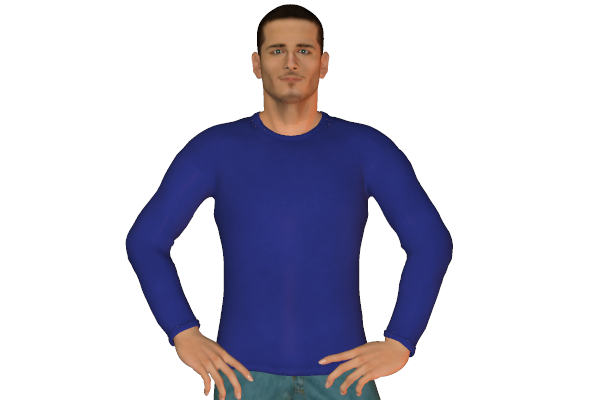
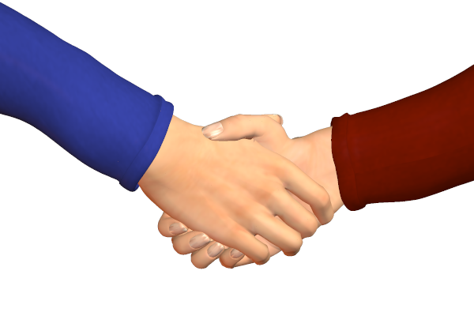
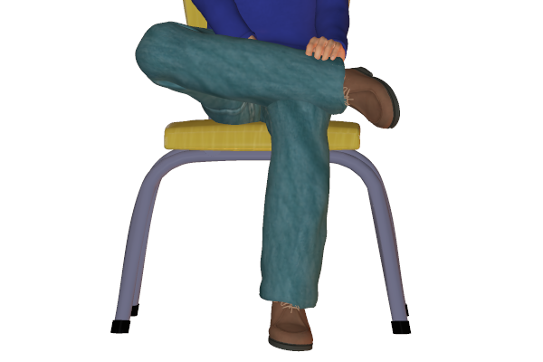

Bookmark added
-
head held highsuperiority, fearlessness, arroganceHigh head position especially if the chin is jutting out indicates arrogance or fearlessness.
-
chin uppride, defiance, confidenceRaising the head generally indicates confidence, pride or resistance. It is a signal of strength making the person feel bigger.
-
arms held behind body with hands clasped
 confidence, authorityThis kind of a gesture indicates authority.
confidence, authorityThis kind of a gesture indicates authority. -
hand(s) on hip(s)confidence, readiness, availabilityThis sign usually indicates that the person is standing in confidence. It also could be used if the person is ready to go.
-
two-fingered V-sign, palm outwardvictory, peaceThe sign of victory.
-
pumping handshake
 enthusiasmThe vigorous pumping handshake indicates enthusiasm of the shaker towards the other person. This is perceived as a sense of transferring energies between them and also to increase motivation.
enthusiasmThe vigorous pumping handshake indicates enthusiasm of the shaker towards the other person. This is perceived as a sense of transferring energies between them and also to increase motivation. -
firm handshakeoutward confidenceA firm handshake is a sign of outward confidence. It also indicates good mood or personality.
-
parallel legs together, sitting(mainly female)
 propernessThis kind of sitting style generally appears in women due to their clothes or upbringing style.
propernessThis kind of sitting style generally appears in women due to their clothes or upbringing style. -
American or figure-4 leg cross
 independent, stubbornThe figure 4 cross leg position is a confident posture to sit in. The crossed leg is like a protective barrier and so it also indicates some bit of stubborness.
independent, stubbornThe figure 4 cross leg position is a confident posture to sit in. The crossed leg is like a protective barrier and so it also indicates some bit of stubborness. -
American or figure-4 leg cross with hand clampresistant, stubbornThis is a more protective version of just the plain American leg cross as the position of the person seems locked. This also reflects the mood of the person.
-
open legs, sitting (mainly male)arrogance, combative, sexual posturingMen who are confident and dominant sit in this kind of a posture. It gives the impression of looking bigger especially if the arms are also kept in a wide position.
-
standing 'at attention'respectfulThis is similar to military 'at attention' posture. It is often a signal of respect when adopted in front of a person of authority.
-
foot forward, standing
 directed towards dominant group memberIn a group of people the person standing with a foot forward generally seems to be the strongest member or leader of the group.
directed towards dominant group memberIn a group of people the person standing with a foot forward generally seems to be the strongest member or leader of the group.